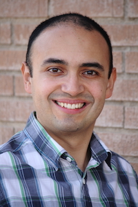

Referencias Personales
Germán Harvey Alférez Salinas
harveyalferez@um.edu.mx
www.harveyalferez.com
Grados Alcanzados
Carrera Profesional
Ingeniero de Sistemas, Universidad EAFIT, Colombia (2004). Descargar Título
Posgrados Obtenidos
Master of Science in Information and Communication Technology, Assumption University (2008). Descargar Título
Doctor en Informática, Universitat Politècnica de València, España (2013). Descargar Título
English as a Second Language
Caribbean Union College (1998). Descargar Diploma{kind=link}
Área de Especialización
Ingeniería de Software
Experiencia Profesional
Experiencia en Mi Área Profesional
Catedrático, Facultad de Ingeniería y Tecnología, Universidad de Montemorelos, México
Enero 2014 – Presente
Cursos Enseñados:
- Licenciatura: Ingeniería de Software, Inteligencia Artificial, Práctica Profesional de Inteligencia Artificial, Redes Neuronales Artificiales, Reconocimiento de Imágenes, Taller de Inglés Conversacional, Procesos y Calidad de Software, e Introducción a la Investigación
- Maestría en Ciencias Computacionales: Ingeniería de Software, Programación Orientada a Objetos, Metodologías Orientadas a Objetos, y Tesis 1
Investigador, Centro de Investigación en Métodos de Producción de Software, Universitat Politècnica de València, España
Octubre 2010 – Diciembre 2013
Tareas y Responsabilidades: Trabajo doctoral en este centro de investigación internacional
Logros: Varias publicaciones científicas internacionales. Dirigí un proyecto conjunto con el Prof. Camille Salinesi y su equipo en la Université Paris 1 Panthéon-Sorbonne. Nuestros resultados fueron presentados en el Journal of Systems and Software
Director, Centro de Investigación y Desarrollo de Tecnología, Facultad de Ingeniería y Tecnología, Universidad de Montemorelos, México
Agosto 2008 – Septiembre 2010
Tareas y Responsabilidades: Coordinación de estudiantes y profesores en proyectos
Logros: Publicaciones científicas y proyectos de investigación
Catedrático Auxiliar, Facultad de Ingeniería y Tecnología, Universidad de Montemorelos, México
Enero 2008 – Septiembre 2010
Cursos Enseñados:
- Licenciatura: Tecnologías Emergentes I y 2, Programación Orientada a Objetos, Ingeniería de Software, Análisis y Diseño de Sistemas, y Programación Visual
- Maestría en Ciencias Computacionales: Metodologías Orientadas a Objetos, Arquitecturas de Software, Ingeniería de Software, Desarrollo de Software, y Programación Orientada a Objetos
Coordinator, Computer Information Systems Department, Faculty of Business Administration, Asia-Pacific International University (Previamente Conocido como Mission College), Tailandia
Agosto 2007 – Diciembre 2007
Tareas y Responsabilidades: Observar la calidad e integridad del programa. Administrar el programa. Reclutar y supervisar a profesores.
Logros: Creación del IT Evangelistic Team. En este equipo un grupo de estudiantes desarrolló soluciones tecnológicas para apoyar la educación en el sureste asiático
Sessional Lecturer, School of Education, Avondale College, Australia
Julio 2006 – Abril 2007
Master of Education (Extension in Asia-Pacific International University): Sessional academic employment
Lecturer, Computer Information Systems Department, Faculty of Business Administration, Asia-Pacific International University, Tailandia
Junio 2005 – Diciembre 2007
Cursos Enseñados: Essentials of Computer Programming, Network and Data Communications, Web-Based Application Development, Visual Basic Programming, Systems Analysis and Design, Computer Business Applications, and Technology and Computer Applications for Pastors
Systems Analyst and Web Manager, Information Technology Systems Department, Asia-Pacific International University, Tailandia
Junio 2005 – Julio 2007
- Tareas y Responsabilidades: Desarrollar software. Desarrollar el sitio Web y la intranet de la universidad
- Logros: Desarrollo de The Dorado Project, una aplicación Web que integra varios departamentos de la universidad
Analista de Sistemas, UNE (Previamente Conocido como Orbitel S.A. E.S.P), Colombia
Julio 2003 – Diciembre 2003
- Tareas y Responsabilidades: Desarrollar un software para administrar la calidad y la productividad de los procesos de la compañía
- Logros: Utilización del Rational Unified Process (RUP) y del Capability Maturity Model (CMM). Fui pionero utilizando .NET en esta compañía internacional. Los beneficios financieros e este sistema fueron presentados a los presidentes y vicepresidentes de la compañía
Investigador, Grupo de Investigación en Ingeniería de Software, Universidad EAFIT, Colombia
Febrero 2001 – Junio 2001; Enero 2003 – Mayo 2003
Tareas y Responsabilidades: Desarrollar y mantener varias herramientas
- Catedrático, Facultad de Ingeniería y Tecnología, Universidad de Montemorelos, México: Enero 2014 – Presente
- Catedrático Auxiliar, Facultad de Ingeniería y Tecnología, Universidad de Montemorelos, México: Enero 2008 – Septiembre 2010
- Sessional Lecturer, School of Education, Avondale College, Australia: Julio 2006 – Abril 2007
- Lecturer, Computer Information Systems Department, Faculty of Business Administration, Asia-Pacific International University, Tailandia: Junio 2005 – Diciembre 2007
- Summa Cum Laude, Doctorado en Informática. Evidencia
- Una de las mejores tesis doctorales 2013-2014 en la Universitat Politècnica de València, España. Evidencia
- Rector's Award for Academic Excellence, MSc Thesis. Assumption University, Tailandia, 2007. Evidencia
- Prof.Dr. Srisakdi Charmonman Award for Excellence in Education, Tailandia, 2007
- Collaborator of the Centro de Informática e Tecnologias da Informação, Departamento de Informática, Universidade Nova de Lisboa, Portugal. Evidencia
- Certificate of Honour and Appreciation for Outstanding Contribution as speaker at the Fourth Internationl Conference on eLearning for Knowledge-based Society and the 24th South East Asia Regional Computer Conference. Bangkok, Thailand. 18-19 de noviembre de 2007. Evidencia
- Reconocimiento por mi colaboración y dedicación destacada en la elaboración de los programas del Plan de Estudios 2010, Universidad de Montemorelos. Abril de 2009. Evidencia
- Reconocimiento por el alto Rendimiento de los Profesores FIT en la Norma Institucional en el curso escolar 2008-2009. Evidencia
- Reconocimiento por haber sido el responsable de un proyecto de Servicio Comunitario en la comunidad de Montemorelos en el curso escolar 2009-2010. Evidencia
- Reconocimiento por mi destacada participación en la ponencia "Redes Sociales y Tecnologías" a los líderes juveniles "Dúnamis", Universidad de Montemorelos. Evidencia
- Reconocimiento por mi valiosa colaboración en la Comisión de Orden y Quietud en 2010.
- Reconocimiento por mi valiosa colaboración en la Comisión de Orden y Quietud en 2014.
- Reconocimiento por mi valiosa colaboración como expositor en el curso de capacitación de Manejo de Información en el Instituto de Desarrollo Profesional (IDP) de la Universidad de Montemorelos en 2010.
- Recognition for Serving as an English Sabbath School Teacher in the first semester of 2014-2015, Universidad de Montemorelos.
- Reconocimiento como asesor del proyecto Software Para la Detección de Cáncer en la Piel Mediante Lunares Usando Reconocimiento de Imágenes y Redes Neuronales en Expo Ciencias Nuevo León, 2014.
- Reconocimiento como asesor del proyecto Implementación de Soluciones Proactivas Para el Control de Tráfico en Expo Ciencias Nuevo León, 2014.
- Reconocimiento como asesor del proyecto Aplicación Móvil Para Reforzar la Escritura de Palabras Básicas en Niños en Expo Ciencias Nuevo León, 2014.
- Reconocimiento como asesor del proyecto Adaptación Proactiva de Motores de Bases de Datos Usando Machine Learning en Expo Ciencias Nuevo León, 2014.
- Reconocimiento de la Clase de Graduandos de la FIT 2015 por mi esfuerzo y dedicación en la obra educativa de la Universidad de Montemorelos para preparar jóvenes misioneros: Evidencia.
{kind=link}
Perfil de Competencia Profesional
Soy catedrático en la Facultad de Ingeniería y Tecnología, Universidad de Montemorelos, México. Soy Doctor en Informática de la Universitat Politècnica de València (España), tengo un MSc in Information and Communication Technology de Assumption University (Tailandia), y poseo el título de Ingeniero de Sistemas de la Universidad EAFIT (Colombia). Mis intereses de investigación incluyen Services Computing, Model-Driven Engineering, Models at Runtime, Autonomic Computing, y Dynamic Software Product Lines. He contribuido al avance científico mediante publicaciones en revistas arbitradas, capítulos de libros, y conferencias internacionales (tales como SPLC, ECOWS, MODELS, ICWS, IUPESM WCMPBME, ICAI y SERP). He administrado proyectos de desarrollo de software a nivel global. He trabajado en universidades, compañías tecnológicas, y grupos de investigación en cuatro continentes (América, Asia, Australia, y Europa). Dirijo el recientemente creado Global Software Lab en la Facultad de Ingeniería y Tecnología, Universidad de Montemorelos.
{kind=link}